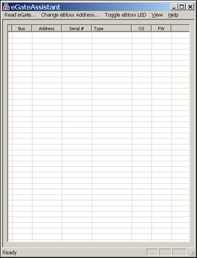
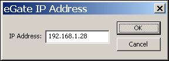
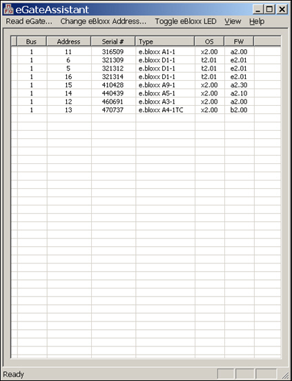
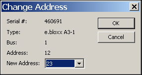

iTest User's Guide
The eGateAssistant is a standalone Windows application used to view an eGate system and modify iConnect module addresses. The Ethernet TCP/IP address of the eGate and a connection to it is all that is required. When the eGateAssistant is executed, the following screen will be displayed:
eGateAssistant Display

The eGate system is read by pressing the Read eGate… menu command. You will be prompted for the IP address (default is 192.168.1.28), and then see the iConnect modules displayed as in the following example:
IP Address

And then:
iConnect Modules

Once the information is read in, an eBloxx module can be selected and then have its address changed with the Change eBloxx Address… menu option. When this option is selected, you will be prompted as follows:
Change eBloxx Address

Select the new address from the drop-down list box, and then click OK. The iConnect module will be programmed with the new address and the eGate system will be re-read.
To help identify iConnect modules, the Toggle eBloxx LED->ON/OFF menu options can be used. The option causes the selected iConnect module to blink its LED on the module. There can only be one module in the system with its LED in the blinking state. If you select another iConnect module and toggle its LED, the previous one will be turned off. Likewise, LED toggling will be turned off when reading the eGate or changing an address.